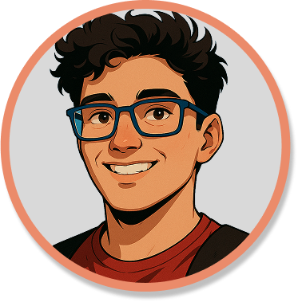
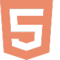
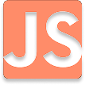
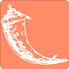
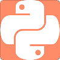
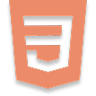

Meu nome é Sydney, tenho 23 anos e sigo construindo meu caminho no desenvolvimento de software. Faço faculdade de Análise e Desenvolvimento de Sistemas e atuo como desenvolvedor frontend, explorando interfaces, animações, responsividade e toda a lógica que dá vida ao que o usuário vê. Também me aventuro no backend, principalmente com Flask, aprofundando meu domínio em Python, que hoje é minha linguagem mais sólida.
Habilidades




